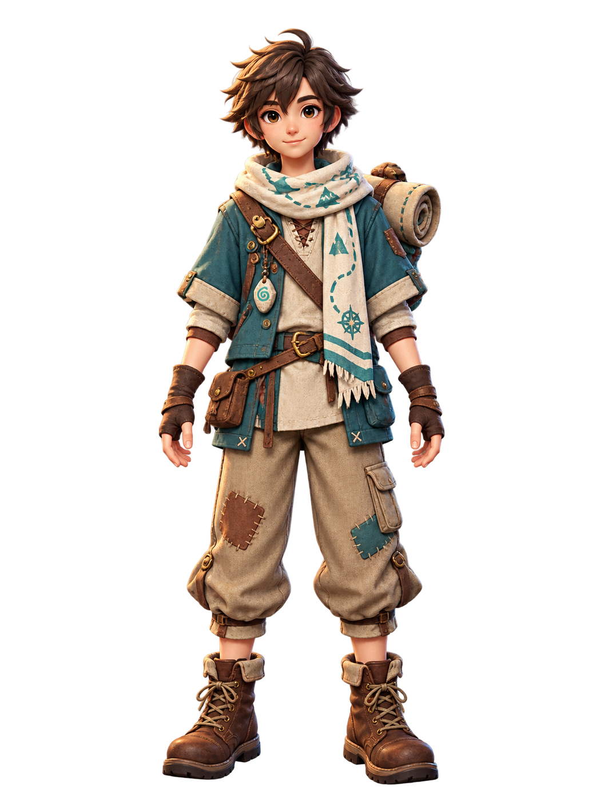
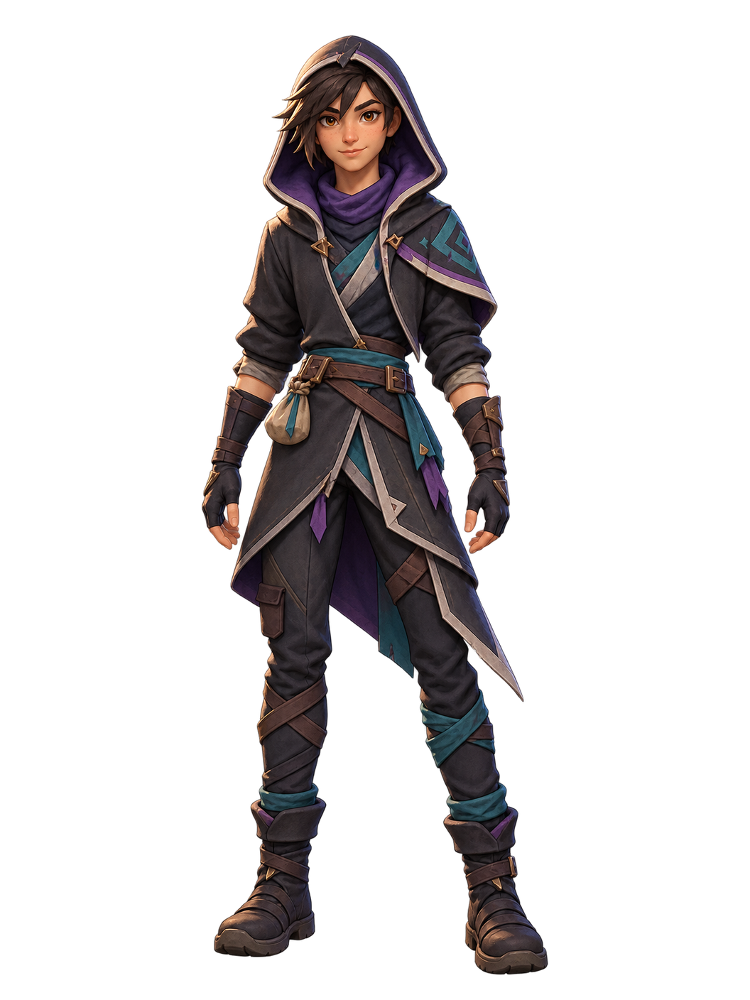
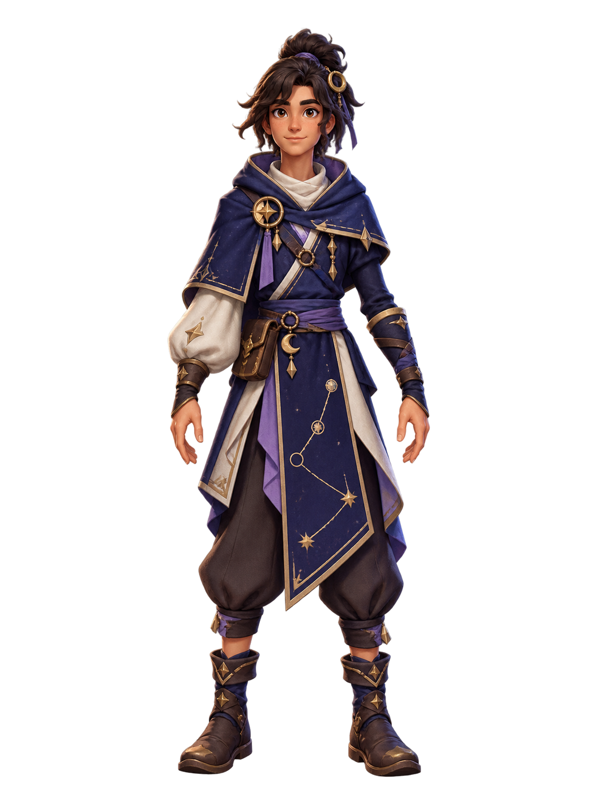
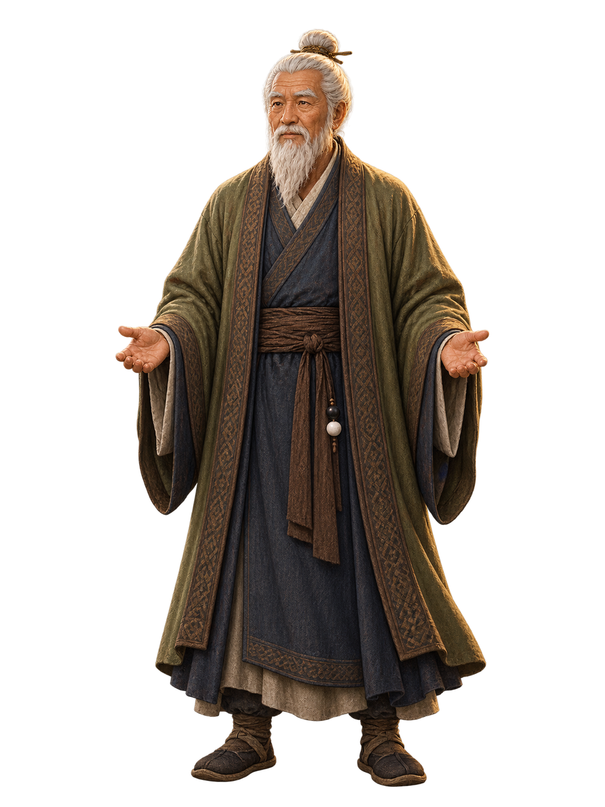
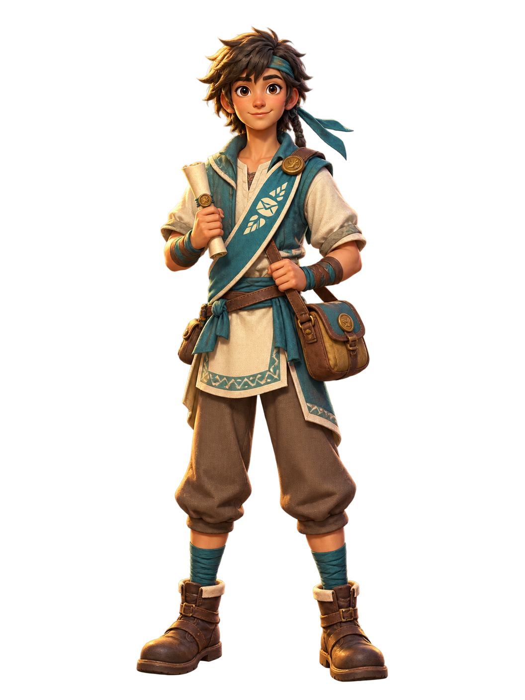

見習生 / Apprentice
A simple beginning, open to every path beyond the village.
Starter appearanceAvailable
The preview is intentionally visual and lore-led. No Attack, Defense, Power, or rarity fields are shown.
Go Odyssey · Wave 2 · Lane A · Gate 2 · P1
This is a review-only vertical slice for the six player-character P1 assets and two Zone 1 NPC assets. It demonstrates collection presentation without registering new ownership, calling the selection API, or writing any database state.
player_appearance.character_key; functional equipment remains player_inventory. Character art, decorative props, collection metadata, and locked preview cards have no combat authority. New candidate IDs are intentionally not added to the runtime roster in this artifact.
A simple beginning, open to every path beyond the village.
The preview is intentionally visual and lore-led. No Attack, Defense, Power, or rarity fields are shown.
Starter appearance.

Existing roster appearance.

Existing roster appearance.

Unlock: first departure milestone.

Unlock: Zone 3 courier story.

Unlock: Sage Tower approach.
NPCs are shown separately from the player collection. They are story/presentation entities and are not selectable appearances.

Canonical teacher and keeper of the first Go trial. Reuses the established E10 identity in a reusable full-body presentation.

Zone 1 courier who delivers the missing-caravan story hook after the Elder trial. Satchel and scroll are story props, not functional equipment.
| Asset | Silhouette / body scale | Face / outline | Lighting / shading | Alpha | Mobile card | Cross-character coherence |
|---|---|---|---|---|---|---|
| apprentice | PASS | PASS — simple novice face and warm contour | PASS — soft upper-left key | PASS — RGBA, no keyed backdrop | PASS — simple large costume blocks | PASS — baseline and palette anchor |
| mage | PASS | PASS — lavender hair/navy robe remain dominant | PASS — restrained gold accents | PASS — RGBA, checkerboard removed | PASS — large robe masses survive reduction | PASS — detail-heavy family retained |
| paladin | PASS | PASS — calm face and warm dark outline | PASS — white/gold highlight controlled | PASS — RGBA, clean export | PASS — white/blue silhouette reads first | PASS — armor-heavy identity retained |
| trail_apprentice | PASS | PASS — scarf and short-coat silhouette | PASS — upper-left key with broad fabric shading | PASS — RGBA, no backdrop | PASS — teal scarf/coat remain legible | PASS — approved beginner/adventurer family |
| night_runner | PASS | PASS — hood opening and diagonal hem | PASS — charcoal/violet/teal separation | PASS — RGBA, no backdrop | PASS — hood and diagonal line survive | PASS — darker rogue family without weapon |
| constellation_apprentice | PASS | PASS — tall hair/hood and open hands | PASS — navy/lavender/ivory balance | PASS — RGBA, no backdrop | PASS — constellation band remains a single motif | PASS — mage/scholar family without class authority |
| world.village_elder | PASS | PASS — canonical beard/topknot/robe identity | PASS — warmer NPC key, still soft upper-left | PASS — RGBA, reusable cutout | PASS — face and robe remain readable | PASS — NPC treatment distinct from player collection |
| world.messenger | PASS | PASS — sash and courier face read at card size | PASS — Zone 1 warm teal/clay palette | PASS — RGBA, reusable cutout | PASS — sash/satchel story silhouette | PASS — NPC role separated from playable IDs |
Owner review focus: identity preservation, mobile silhouette, and whether the generated P1 finish is acceptable as the shared production bar before any runtime registration or broader art batch.